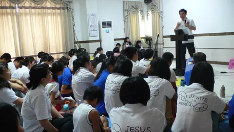
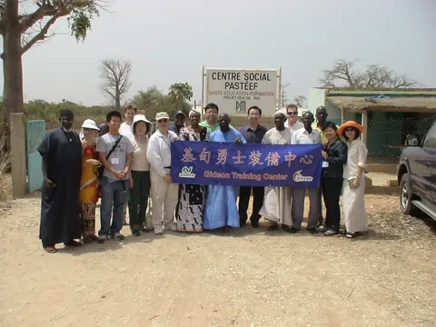
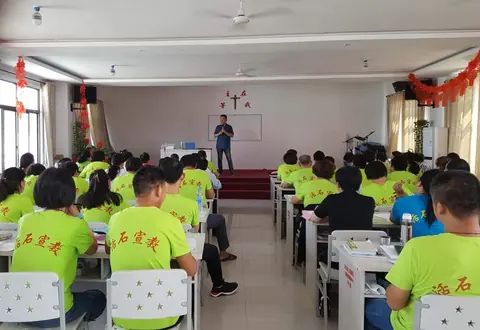

活出新生命
常在主的道中，學習彼此相愛，在家庭、職場與教會中活出與蒙召之恩相稱的生活。生命更新是聖靈的工作，我們在恩典中學習順服。
參閱：約翰福音 8:31、13:35、15:8；以弗所書 4:1–3
01 / VISION & CALLING
基甸勇士裝備中心於 2004 年 2 月成立，回應福音大使命的託付，以聖經教導、門徒訓練與宣教為事工核心。「基甸」之名取自士師記，提醒我們：神使用軟弱的人，得勝的源頭在於祂的同在與能力。
常在主的道中，學習彼此相愛，在家庭、職場與教會中活出與蒙召之恩相稱的生活。生命更新是聖靈的工作，我們在恩典中學習順服。
參閱：約翰福音 8:31、13:35、15:8；以弗所書 4:1–3
回應主耶穌使萬民作門徒的吩咐，傳揚福音，教導人遵守主的話，也培育忠心、能繼續教導別人的同工，讓門徒帶領門徒。
參閱：馬太福音 28:18–20；提摩太後書 2:2
「神總是開奇妙的門並加添心力，叫我下垂的手和發酸的腳能夠再挺起來。」
黃思義牧師 · 基甸事工的蒙恩回顧
得救是本乎恩，也因著信；服事是蒙恩的回應。栽種與澆灌都倚靠主，惟有神使生命成長。參閱：以弗所書 2:8–10；哥林多前書 3:6–7。
02 / DISCIPLESHIP
透過真理的教導、生命的互動、宣教的挑戰與門訓的責任，陪伴人跟隨耶穌。裝備與生活相連，所學的真理要在禱告、關懷、團隊配搭與福音行動中實踐。
以有系統的聖經教導，幫助門徒在真理、信心與恩賜的運用上成長，建立讀經、禱告與靈修的生活。
與地方教會及裝備同工配搭，在小組、守望關懷與團隊服事中彼此扶持，讓生命逐漸成熟。
連結資源與禾場需要，參與福音廣傳、教會建立及工人的持續裝備，一同服事主所愛的人。
學習聖經、讀經方法與禱告，在主裡建立生命的根基。
操練恩賜、守望關懷與團隊服事，在生活中實踐所學。
裝備能教導與牧養別人的同工，學習帶領小組與門徒。
回應宣教呼召，在教會、職場與禾場中忠心服事。
以上依事工異象與歷史訓練資料整理，呈現裝備方向；現行聚會與裝備安排請向教會洽詢。
03 / BEYOND BOUNDARIES
基甸的服事包含跨地區聖經教導、門徒培育與海外宣教。黃思義牧師曾透過 Skype，與全美各地的裝備中心成員持續門訓；如今也運用 YouTube 與短影音傳遞福音信息及聖經真理。



照片為教會提供的歷史事工紀錄；未載明日期的照片不另標年份。
04 / FOOTPRINTS OF GRACE
從裝備課程、教會配搭到海外宣教，這些留下的紀錄，見證神在不同時期的帶領。與牧養相連的關懷行動，也提醒我們將所領受的愛分享出去。
以聖經教導與訓練為主，配合恩賜操練及宣教行動，與各地教會一同裝備信徒。早期訪談記錄了提升屬靈生命、認識信仰與在日常生活中活出使命的負擔。
歷史資料記載，2007 年 11 月至 2008 年 2 月於紐約台美基督教會進行基甸勇士裝備課程。同期也留下基甸家庭教會配搭、聖誕聯歡及關懷癌友的紀錄。
事工照片與歷史資料留下團隊前往塞內加爾、與當地教會及社區相遇的足跡。在跨文化的服事中，學習回應需要，傳揚基督的愛。
黃牧師參與的聖光台福基督教會，與 Feeding South Florida 合作，在 West Park 與 Miami Beach 發放食物，關懷疫情中有需要的居民。這段教會牧養紀錄，呈現以實際行動分享愛、服事鄰舍的心志。
依教會提供的《佛州大眾報》2020 年 12 月 24 日報導整理。
從網路門訓到今日的 YouTube 信息與短影音，持續運用合宜的工具教導聖經、陪伴人跟隨主。方式隨環境而調整，回應大使命的心志持續向前。
05 / SERVING TOGETHER
依生命樹教會組織規劃，基甸勇士涵蓋宣教、裝備、關懷與出版四個事工方向。各項服事以基督為首，彼此支持，共同回應門徒培育與福音使命。
連結教會與宣教資源，回應差遣，支持福音廣傳與禾場開展。
透過聖經教導、門徒訓練與實際操練，裝備禾場工人。
包含曙光種子與社區弱勢關懷方向，以陪伴與行動回應人的需要。
透過福音影音與紙本出版品，傳遞真理，支持門徒裝備與生命成長。
認識主、跟隨主，並陪伴更多人成為主的門徒。歡迎認識生命樹教會的聚會與裝備，在真理與愛中一同成長。